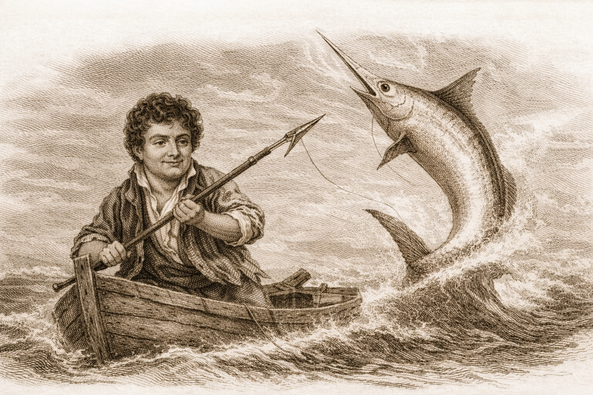

1.1) Ο Fourier και η θάλασσα
Εναλλακτικός τίτλος που ίσως δουλεύει ακόμα πιο δυνατά: «Από τον Fourier στα Κύματα».
Μια παρουσίαση που αποκαλύπτει πώς λίγες εξισώσεις μετατρέπονται σε ήχο, κίνηση και ρεαλιστική ψηφιακή θάλασσα.

1.2) Η τεχνική στον κινηματογράφο
2.1) Κύμα: \(f(x) = \sin(x)\)
Τσέκαρε διαδοχικά τα κουτιά για να εμφανίζεται κάθε νέος όρος της ίδιας συνάρτησης: πρώτα το k, μετά το A, μετά η φάση και στο τέλος ο χρόνος.
2.2) 2D κύμα: \(A\sin(k_xx+k_zz+\omega t+\phi)\)
2.3) Gerstner waves
2.4) Δραστηριότητα: Άθροισμα κυμάτων
Ρύθμισε πλάτος και συχνότητα για τέσσερις συνιστώσες. Το τελικό κύμα προκύπτει από το άθροισμα των 4 συνιστωσών. Οι συχνότητες των students εμφανίζονται στο legend παρακάτω.
Επίλεξε τη συχνότητα του κύματός σου. Η επιλογή σου εμφανίζεται live στον δάσκαλο.
3.1) Το παράδειγμα του ήχου
Μια μόνο συχνότητα f παράγει ένα καθαρό ημίτονο. Κοντά στις κορυφές συγκεντρώνονται τα μόρια αέρα (πύκνωση) και κοντά στα κοιλώματα αραιώνουν (αραίωση). Η συχνότητα καθορίζει τον αριθμό των κύκλων ανά δευτερόλεπτο — δηλαδή τον τόνο του ήχου.
3.2) Δραστηριότητα: συχνότητες ήχου και πυκνώσεις/αραιώσεις
Ομαδική, μη ανταγωνιστική δραστηριότητα: κάθε student ρυθμίζει συχνότητα και πλάτος, ενώ εδώ φαίνονται αχνά οι ατομικές συνεισφορές και εντονότερα το συνολικό άθροισμα. Οι teacher συνιστώσες εμφανίζονται ως f1 και f2.
Ρύθμισε συχνότητα και πλάτος. Η επιλογή σου στέλνεται live για τη δημιουργία του κεντρικού ήχου της τάξης.
Το κύμα και τα μόρια παρακάτω δείχνουν προεπισκόπηση των δικών σου ρυθμίσεων.
Τελικό κύμα (ενεργές συχνότητες)
3.3) Αντίστροφη διαδικασία: από σύνθετο ήχο σε 3 καθαρούς ήχους
Ξεκινάμε από έναν σύνθετο ήχο στο πάνω μέρος. Κάτω φαίνονται οι τρεις συνιστώσες που τον δημιουργούν όταν τις απομονώσουμε στο φάσμα.
4.1) Προσέγγιση του \(e^{x/2}\cos(x)\) με πολυώνυμο
Ρύθμισε τους συντελεστές με τα sliders και δες πώς αλλάζει η προσέγγιση του \(e^{x/2}\cos(x)\). Η μπλε καμπύλη είναι η αρχική συνάρτηση και η πορτοκαλί το πολυώνυμο Taylor.
4.2) Taylor του \(\cos(x)\) από παραγώγους στο \(x_0=0\)
Κάθε συντελεστής προκύπτει από \(c_n = \frac{f^{(n)}(0)}{n!}\). Με τον slider κρατάς περισσότερους όρους και βλέπεις καλύτερη προσέγγιση.
4.3) Taylor του \(\sin(x)\) από παραγώγους στο \(x_0=0\)
Το \(\sin(x)\) έχει μόνο περιττούς όρους στο ανάπτυγμα γύρω από το 0. Παρατήρησε τη διαφορά κοντά και μακριά από το 0.
4.4) Taylor του \(e^x\) από παραγώγους στο \(x_0=0\)
Για το \(e^x\), όλες οι παράγωγοι στο 0 είναι 1, άρα οι συντελεστές είναι \(\frac{1}{n!}\).
4.5) Δραστηριότητα: Εύρεση συντελεστών
Εμφανίζεται η συνάρτηση-στόχος \(f(x)=e^{2x}\). Μόλις υποβάλουν οι φοιτητές, πάτα Reveal για να εμφανιστούν όλες οι καμπύλες.
Ρύθμισε τους συντελεστές \(c_0,\,c_1,\,c_2,\,c_3\) ώστε το πολυώνυμο \(P(x)=c_0+c_1 x+c_2 x^2+c_3 x^3\) να προσεγγίζει τη συνάρτηση.
5.1) Τύπος του Euler
Ρύθμισε την γωνία θ και το μέτρο r και δες το διάνυσμα στο μιγαδικό επίπεδο: η προβολή στον άξονα Re είναι r cosθ και στον άξονα Im είναι r sinθ.
re^{iθ} = 0.00 + i·0.00
| \(i^0\) | \(=1\) | \(i^1\) | \(=i\) | \(i^2\) | \(=-1\) | \(i^3\) | \(=-i\) | \(i^4\) | \(=1\) |
Γνωστές σειρές:
\[\cos x=\sum_{k=0}^{\infty}(-1)^k\frac{x^{2k}}{(2k)!},\qquad \sin x=\sum_{k=0}^{\infty}(-1)^k\frac{x^{2k+1}}{(2k+1)!}\]Αρτιοι/περιττοί εκθέτες:
\[(i\theta)^{2k}=(-1)^k\theta^{2k},\qquad (i\theta)^{2k+1}=i(-1)^k\theta^{2k+1}\] \[e^{i\theta}=\underbrace{\sum_{k=0}^{\infty}(-1)^k\frac{\theta^{2k}}{(2k)!}}_{\cos\theta} +i\underbrace{\sum_{k=0}^{\infty}(-1)^k\frac{\theta^{2k+1}}{(2k+1)!}}_{\sin\theta}\]5.2) Ο i ως περιστροφή και το ανάπτυγμα \(e^{i\theta}\)
Πολλαπλασιασμός ενός μιγαδικού αριθμού με i ισοδυναμεί με περιστροφή κατά 90° αντίθετα από τους δείκτες του ρολογιού. Με τον slider ελέγξεις την γωνία θ.
Ο i ως περιστροφή:
\[i \cdot z \;\Longrightarrow\; \text{στροφή } 90°\ (\text{αντίθετα ρολόι})\] \[i^0=1,\quad i^1=i,\quad i^2=-1,\quad i^3=-i,\quad i^4=1,\;\ldots\]6.1) Θερμοκρασία ράβδου
6.2) Δραστηριότητα: Fourier και θερμοκρασία ράβδου
Σημείο και Θερμοκρασία (3.5)
Classroom επιλογές θερμότητας
6.3) Ράβδος 1 m και step function
Η ράβδος έχει μήκος 1 m: στο αριστερό μισό η θερμοκρασία είναι χαμηλή και στο δεξί υψηλή. Η απότομη αλλαγή (step) προσεγγίζεται από άθροισμα Fourier με όλο και περισσότερους όρους.
6.4) Σύνθεση Fourier: ζωγράφισε συνάρτηση → άθροισμα ημιτόνων
Αριστερά κάνε κλικ ή σύρε για να ορίσεις τιμές y σε διάφορα x (αρχικά είναι ο άξονας xx'). Δεξιά βλέπεις πόσο καλά το άθροισμα ημιτόνων Fourier προσεγγίζει τη συνάρτησή σου.
7.1) Από το σήμα στο φάσμα (Fourier Transform)
Ρύθμισε τη συχνότητα του σήματος και τη δοκιμαστική συχνότητα k. Η ημιτονοειδής καμπύλη «τυλίγεται» μέσω του e-i2πkn/N και η μέση τιμή της (κέντρο μάζας) γίνεται μεγάλη ακριβώς όταν το k ταιριάζει, οπότε εμφανίζεται spike στο γράφημα.
7.2) Δραστηριότητα: Βρες τη συχνότητα του σήματος
Κάθε γύρο ο teacher δημιουργεί κρυφή τυχαία συχνότητα (με ακρίβεια δεκαδικού) για κάθε student. Με το slider αλλάζεις τη δοκιμαστική συχνότητα k και «τυλίγεις/ξετυλίγεις» το σήμα. Όταν βρεις το καλύτερο ταίριασμα πατάς submit. Στον teacher φαίνεται αρχικά μόνο ποιοι υπέβαλαν, και με κουμπί reveal εμφανίζονται οι τιμές και το σφάλμα.
Στον teacher εμφανίζεται πρώτα μόνο ποιοι υπέβαλαν. Με reveal εμφανίζονται τιμή και σφάλμα ανά student.
7.3) Σύνθετο σήμα 2-3 συχνοτήτων και spikes
Διαδραστική απεικόνιση μετάβασης από το πεδίο χρόνου στο πεδίο συχνοτήτων, όπου οι κορυφές δείχνουν ποιες συχνότητες υπάρχουν περισσότερο. Εδώ βλέπεις και το τύλιγμα του σύνθετου σήματος στο μιγαδικό επίπεδο για δοκιμαστική συχνότητα k.
7.4) Τι κάνει ο απλός Fourier Transform (DFT)
Ο Fourier Transform παίρνει ένα σήμα στον χρόνο και υπολογίζει πόση ενέργεια έχει σε κάθε συχνότητα. Έτσι από το «κυματάκι» περνάμε σε spikes που δείχνουν καθαρά ποιες συχνότητες συμμετέχουν.
7.5) Τι κάνει ο αντίστροφος μετασχηματισμός (IDFT/IFFT)
Το IFFT κάνει το αντίστροφο: από το φάσμα επιστρέφει στο σήμα χρόνου. Αν αφαιρέσουμε τη πολύ υψηλή συχνότητα στο φάσμα, το ανακατασκευασμένο σήμα γίνεται πιο ομαλό.
7.6) Παράδειγμα απλού DFT → IFFT σε ήχο (φιλτράρισμα)
Εδώ εφαρμόζουμε το pipeline στην πράξη: Fourier transform για ανάλυση του ήχου, αφαίρεση της πολύ υψηλής συνιστώσας (3200 Hz), και IFFT για ανακατασκευή πιο ομαλού σήματος στον χρόνο.
8.1) Από τον απλό DFT στον FFT (Cooley-Tukey)
Στον απλό DFT, για κάθε συχνότητα κάνουμε άθροισμα σε όλα τα \(N\) δείγματα, άρα ο συνολικός κόπος μεγαλώνει σαν \(N^2\). Η ιδέα Cooley-Tukey είναι να σπάσουμε το ίδιο πρόβλημα σε δύο μισά (άρτιοι και περιττοί όροι), ώστε να ξαναχρησιμοποιούμε υπολογισμούς. Γράφουμε το σχήμα ως \(A(x)=A_{\text{even}}(x^2)+x\,A_{\text{odd}}(x^2)\). Άρα αντί για ένα πρόβλημα μεγέθους \(N\), λύνουμε δύο προβλήματα μεγέθους \(N/2\), και στο τέλος τα συνδυάζουμε. Έτσι περνάμε από \(N^2\) σε \(N\log_2N\).
\(N=\)1024 • \(N\log_2N\): 10.24K
• \(N^2\): 1.05M • Speedup: 102.40×
\(\log_2N=\)10.00 • \(\log_{10}(N\log N)=\)4.01
• \(\log_{10}(N^2)=\)6.02
Άξονες: \(x=N\), \(y=\text{τιμή πολυπλοκότητας}\) (σε log κλίμακα)
8.2) Cooley-Tukey FFT: αναδρομή και επίπεδα
Ιδέα Cooley-Tukey: χωρίζουμε το σήμα σε άρτιες/περιττές θέσεις και λύνουμε δύο μικρότερα προβλήματα, ξανά και ξανά. Η σχέση είναι \(T(N)=2T(N/2)+N\). Αυτό οδηγεί σε συνολικό κόστος \(N\log_2N\), αντί για \(N^2\).
\(N=\)1024 • Άμεσο DFT: 1.05M • FFT (Cooley-Tukey): 10.24K • Κέρδος: 102.40×
8.3) Δραστηριότητα: Αγώνες πολυπλοκότητας
Επίλεξε μία πολυπλοκότητα και πάτα «Υποβολή επιλογής». Ο teacher θα κάνει reveal όταν μαζευτούν αρκετές υποβολές.
Με reveal εμφανίζονται οι επιλογές όλων. Με «Επόμενο N ×10» αυξάνεται το N επί 10 και υπολογίζεται η απόδοση κάθε μαθητή.
Επιλογή πολυπλοκότητας
Πίνακας teacher
9.1) Από 1D ήχο σε 2D θάλασσα
9.2) Τι είναι ο κυματισμός
Στον ωκεανό, το ύψος της επιφάνειας είναι ένα πεδίο τιμών που μπορεί επίσης να αναλυθεί φασματικά, όπως και ένα ηχητικό σήμα.
9.3) Ενεργειακό φάσμα
Classroom έκδοση: κάθε student στέλνει 3 ή 4 τυχαίες συχνότητες. Ο server φτιάχνει ένα κοινό set ~40 όρων (όχι απαραίτητα Gaussian) και από αυτό προκύπτει ένα συνολικό «raw» κύμα πριν το φυσικό weighting.
9.4) Φάσμα Phillips
Τώρα βάζουμε φυσική: πολλαπλασιάζουμε τις Gaussian τιμές με \(\sqrt{P(k)}\), όπου \(P(k)\) είναι το Phillips spectrum. Έτσι ενισχύονται/καταστέλλονται συγκεκριμένα μήκη κύματος.
9.5) Τυχαίες φάσεις
Από το μέτρο και την τυχαία φάση φτιάχνουμε τους μιγαδικούς συντελεστές \(H_0(k)\). Αυτό δίνει ρεαλισμό: η επιφάνεια δεν επαναλαμβάνεται μηχανικά, αλλά παραμένει στατιστικά σωστή.
9.6) Εξέλιξη στον χρόνο
Κάθε mode ταλαντώνεται με δική του γωνιακή συχνότητα. Το άθροισμα όλων των modes είναι η τελική δυναμική κίνηση του νερού.
9.7) IFFT: από \(H(k_x,k_z)\) σε \(h(x,z,t)\)
Με IFFT γυρίζουμε από το spectral domain στο spatial domain και παίρνουμε ξανά ύψος επιφάνειας ανά σημείο πλέγματος.
9.8) Τελικό rendering
Το τελικό αποτέλεσμα προκύπτει από displacement + normals + shading και μπορεί να χρησιμοποιηθεί για πλάνα μεγάλης κλίμακας.
9.9) Θάλασσα κυμάτων (τελική εικόνα)
Η ίδια ιδέα του στόχου κλείνει την παρουσίαση: από θεμελιώδη κύματα και ήχο, σε μια δυναμική επιφάνεια θάλασσας με επάλληλους κυματισμούς.